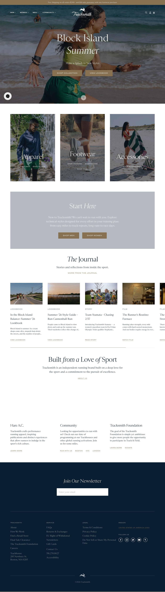

| LP | Etykieta (jak jest) | Typ / rola obiektu | Zawartość / akcje | Obserwacje (→ baza) | P | Pozycja |
|---|---|---|---|---|---|---|
| 1 | Race with Tracksmith this summer. Twilight 5000 Series & The Envoy's latest road trip: a spin through New England's summer races. | Pasek promocji | Brak widocznego przycisku CTA, sam tekst informacyjny. | Wąski, czarny pasek z białym tekstem. Brak klasycznego CTA czy linku akcji, co marnuje potencjał strefy o najwyższej uwadze shoppera. | – | above fold 0px |
| 2 | MEN · WOMEN · FOOTWEAR | Tracksmith | STORES · EVENTS & PROGRAMS · JOURNAL | Header | Ikony: wyszukiwarka, konto, koszyk z licznikiem. Kategorie linkują do listingów. Logo linkuje do HP. Transparent background overlaying hero. | Nawigacja i logo są nałożone jako przezroczysty overlay na Hero banner. Zamiast logotypu tekstowego, głównym wyróżnikiem marki w headerze jest graficzna ikona zająca. | – | above fold 40px |
| 3 | Visiting from Poland? Continue to the PL store to see local pricing and shipping rates. PL STORE | LOOKING FOR THE US STORE? CLICK HERE. | Modal geolokalizacjiNOWY | PL STORE (przycisk przekierowujący na rynek PL), LOOKING FOR THE US STORE? CLICK HERE (link). Przycisk X zamykający modal. | Modal wyskakuje natychmiast po wejściu, całkowicie zasłaniając baner główny (Hero) i jego przekaz. Nakłada się na inny modal w tle (zapis do newslettera), tworząc chaos wizualny (tzw. modal overlay conflict). | – | above fold 120px |
| 4 | JOIN THE TEAM / Get 20% off | Baner główny (Hero) | Przycisk strzałki w dół przewija stronę do kolejnej sekcji. | Hero ma charakter czysto lifestyle'owy i wizerunkowy, ale przez nałożenie modalu geolokalizacji i newslettera jego przekaz marketingowy jest niewidoczny dla nowego użytkownika z Polski. | – | above fold 40px |
| 5 | Quick Kits | Siatka produktów | Każdy kafelek ma dwa linki tekstowe na dole: koszulka i spodenki mają 'SHOP MEN' i 'SHOP WOMEN', a buty mają 'ON-ROADS' i 'OFF-ROADS'. Brak przycisków Dodaj do koszyka i cen. | Zamiast klasycznej karuzeli produktów z cenami i ATC, Tracksmith prezentuje 'Kity' za pomocą dużych zdjęć lifestyle'owych o wysokich walorach estetycznych. CTA to linki tekstowe kierujące do listingów per płeć lub teren. | – | scroll 1 980px |
| 6 | Summer of Speed | Baner wyprzedaży / sale | Przyciski 'TWILIGHT 5000' i 'SUMMER ROADS' kierujące do stron dedykowanych wydarzeniom. | Czysta, typograficzna sekcja z dużym paddingiem (whitespace) i brakiem zdjęć. Dwa przyciski o równorzędnej wadze wizualnej w kolorze brązowym. | – | scroll 2 2160px |
| 7 | The Journal | Sekcja blog / poradniki | Linki 'VIEW LOOKBOOK', 'READ STORY', 'WATCH FILM' oraz 'MORE FROM THE JOURNAL' kierujące do artykułów lub całego bloga. | Artykuły są stylizowane na reportaże sportowe, kładąc nacisk na autentyczne zdjęcia społeczności biegowej i lookbooki produktowe. CTA to linki tekstowe. | – | scroll 3+ 3080px |
| 8 | Built from a Love of Sport | O marce / misja | Link tekstowy 'ABOUT US' kierujący do strony o historii marki. | Skrajny minimalizm — manifest marki zajmuje pełną szerokość ekranu z ogromnym whitespace, bez żadnych elementów graficznych. Skupienie na tekście i misji. | – | scroll 3+ 4540px |
| 9 | Hare A.C. · Community · Tracksmith Foundation | Kolumny informacyjneNOWY | Linki 'LEARN MORE', 'RUN WITH US' (oraz linki do miast: BOSTON, NYC, LONDON), 'DONATE' kierujące do podstron. | Trzykolumnowy układ buduje silny wizerunek marki jako ekosystemu wspierającego społeczność biegaczy, a nie tylko sprzedającego odzież. | – | scroll 3+ 5120px |
| 10 | Join Our Newsletter | Zapis do newslettera | Pole wprowadzania adresu e-mail 'Enter your email'. Brak widocznego przycisku zapisu, prawdopodobnie zatwierdzanie przez Enter. | Ciemne tło kontrastuje z resztą jasnej strony. Brak standardowego przycisku wyślij/zapisz (CTA) i brak zachęty finansowej/rabatowej (incentive) bezpośrednio w sekcji inline. | – | scroll 3+ 5720px |
| 11 | TRACKSMITH · SERVICE · LEGAL · REGION · FOLLOW US | Footer | Linki nawigacyjne w kolumnach, link wyboru regionu 'UNITED STATES OF AMERICA (USD)', ikony społecznościowe (FB, IG, Twitter, YT, Strava). | Stopka zawiera fizyczny adres Trackhouse w Bostonie oraz numer telefonu, co zwiększa wiarygodność sklepu. Spójna kolorystyka z newsletterem. | – | scroll 3+ 6100px |
| LP | Element | Selektor | Tracking | data-gtm-title | Klasy |
|---|---|---|---|---|---|
| 1 | Pasek promocji | div#top-site-banner |
○ untracked | — | top-site-banner-root |
| 2 | Header | header.Header |
○ untracked | — | Header |
| 3 | Modal geolokalizacji | #location-prompt |
○ untracked | — | LocationPrompt LocationPrompt--is-visible |
| 4 | Baner główny (Hero) | div.frame__section.frame__section--content |
○ untracked | — | frame__section frame__section--content |
| 5 | Siatka produktów | div.Frame__sections |
○ untracked | — | Frame__sections |
| 6 | Baner wyprzedaży / sale | div.frame__section.frame__section--content |
○ untracked | — | frame__section frame__section--content |
| 7 | Sekcja blog / poradniki | section.JournalPostCarouselCard |
○ untracked | — | base-carousel__slide JournalPostCarouselPanel__carousel-slide JournalPostCarouselPanel__carousel-slide--1/4 |
| 8 | O marce / misja | div.frame__section--content |
○ untracked | — | RichText RichText--large Panel__richtext |
| 9 | Kolumny informacyjne | div.block-grid |
○ untracked | — | block-grid |
| 10 | Zapis do newslettera | form.NewsletterForm |
○ untracked | — | NewsletterForm footer__form |
| 11 | Footer | footer.footer |
○ untracked | — | footer |
